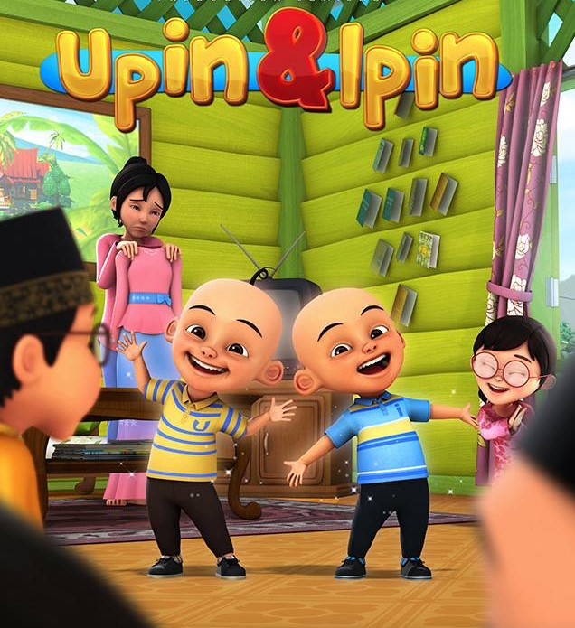
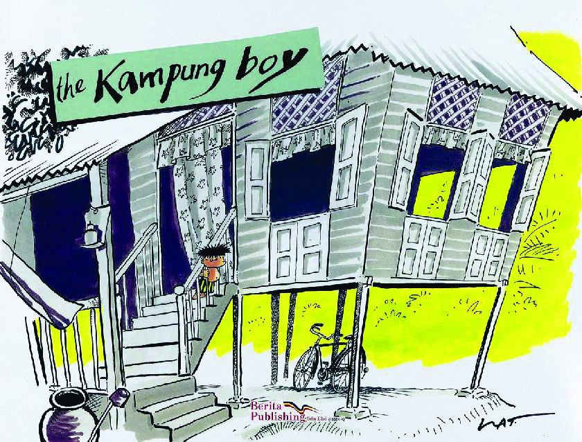

Summary:
Upin and Ipin are five-year-old Malaysian twins who reside with their elder sister Ros and grandmother Uda (whom they call Opah) in a village house in Kampung Durian Runtuh. They have lost their parents in their infancy. Upin and Ipin study in the village's Tadika Mesra (kindergarten), where they with a group of classmates, including the adorable and right-thinking Mei Mei, a joker and poetic Jarjit Singh, the clumsy and short-tempered Ehsan, an easygoing and sarcastic Fizi (Ehsan's cousin), and an entrepreneurial and meticulous Mail.The headman of Kampung Durian Runtuh is Isnin bin Khamis, better known as Tok Dalang Ranggi, the Wayang Kulit champion. Tok Dalang keeps a cluster of rambutan trees for commercial purposes, and a rooster named "Rembo". Among the village's other notable residents are Muthu, owner of the village's only food stall who lives with his animal whisperer son Rajoo and pet steer Sapy; Salleh (Sally), a transgender-apparent who owns a mobile library; and Ah Tong, a strident-voiced vegetable farmer. A new character was later added in the series who is an Indonesian girl named Susanti who moved in with her family.

Summary:
Kampung Boy is a Malaysian animated television series first broadcast in 1997. It is about the adventures of a young boy, Mat, and his life in a kampung (village). The series is adapted from the best-selling graphical novel The Kampung Boy, an autobiography of local cartoonist Lat. A main theme of Kampung Boy is the contrast between the traditional rural way of life and the modern urban lifestyle. The series promotes the village lifestyle as an environment that is fun and conducive to the development of a healthy and intelligent child. It raises the issue of modernization, proposing that new values and technologies should be carefully examined by a society before being accepted